Editor Tags
This explains what and how tags are used in the Zero Engine.
Conceptually
Tags are an alternate form of organization to the hierarchical folders.
Properties of Tags:
Tags represent ideas or categories that are associated with an object.
Multiple tags can be associated with a single object.
Objects are found by filtering all available objects by their tags, thus each object would at least need one tag to be found.
Each additional tag used while searching would further restrict the results, however, the order in which the filtering is applied would not change the final result. Thus,
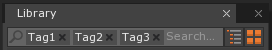
would show the same objects as
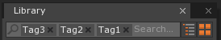
and
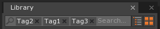
and all other permutations of tags.
Tags in Zero
Tags in the Zero Engine are used in the Library Window to organize the resources.
Adding and Removing Tags
Right-clicking on an object in the Library Window will give you the option to Edit Tags:
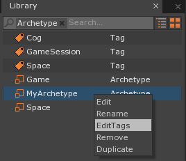
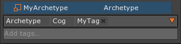
Here you can add tags
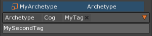
and remove them using the x button.
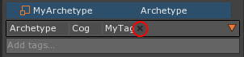
Automatically Generated Tags
There are a few automatically generated tags, such as Archetype, Level, Texture, etc. These arise from the need to have a tag for every object so that they can show up when you search. They are added when you add the resource and cannot be removed. This prevents a user from losing the ability to access a resource they created.
Example Using Tags
Consider organizing your movie collection. You might want to organize it by genre, age restriction rating, or which actors it stars. On your shelf you have to choose which way you’ll organize your DVDs. Your DVD can only be in one spot at a time unless you have duplicates. Not having this physical restriction with digital data, you can instead associate the DVDs with tags. Therefore you could find “MovieA” looking under the tag ‘Action’, ‘Crime’, ‘Sci-Fi’, ‘Actor1’, ‘Actor2’, ‘Actress1’, ‘RatedR’ and any other tags you choose to associate it with, such as ‘PersonalFavorite’ or ‘TimeTravel’.
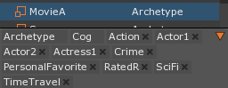
Having multiple tags does more than allow you to find your same DVD in multiple ways, it also allows you to filter your selection when you aren’t sure what you want.
Consider the following:
You are looking for a movie and you are interested in watching an Action, Sci-Fi. By choosing those tags you find “MovieA”, “MovieB”, and “MovieC”.
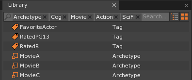
Seeing the other associated tags of Action, Sci-Fi movies,
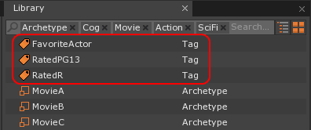
you decide to go for a family friendly title. Choosing ‘RatedPG13’ you further refine your search, narrowing your choices to “MovieB” and “MovieC”. At this point you can choose whichever movie you want.
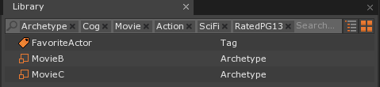
Alternately, you can filter out even more titles by selecting those tagged with ‘FavoriteActor’, and be left with “MovieC”.
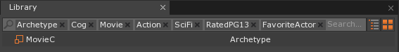